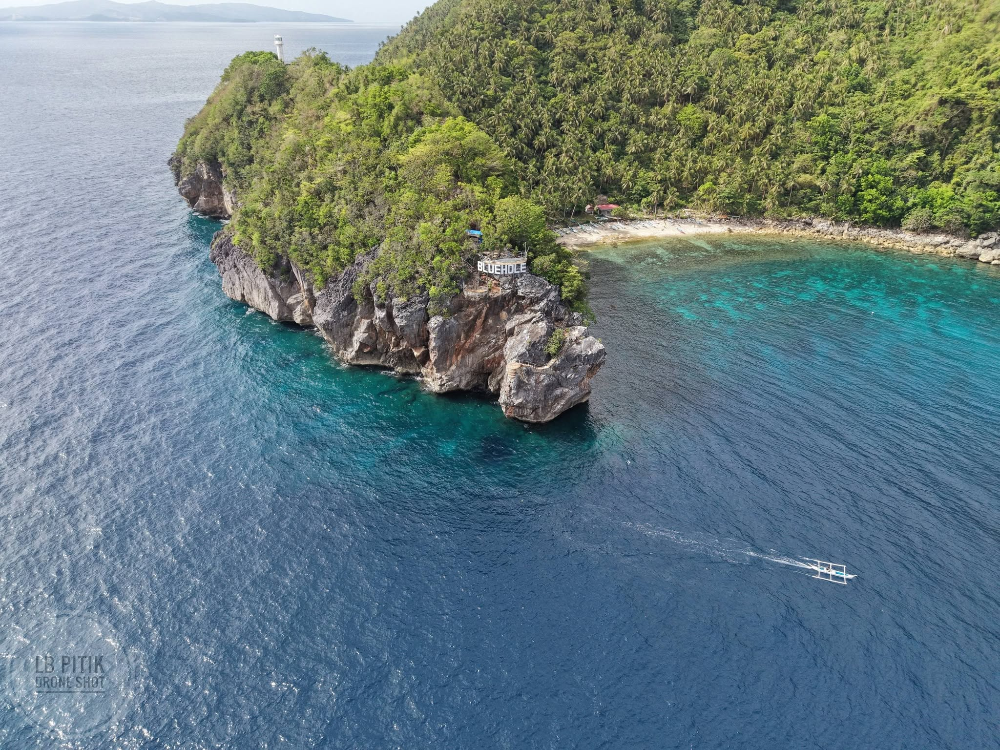
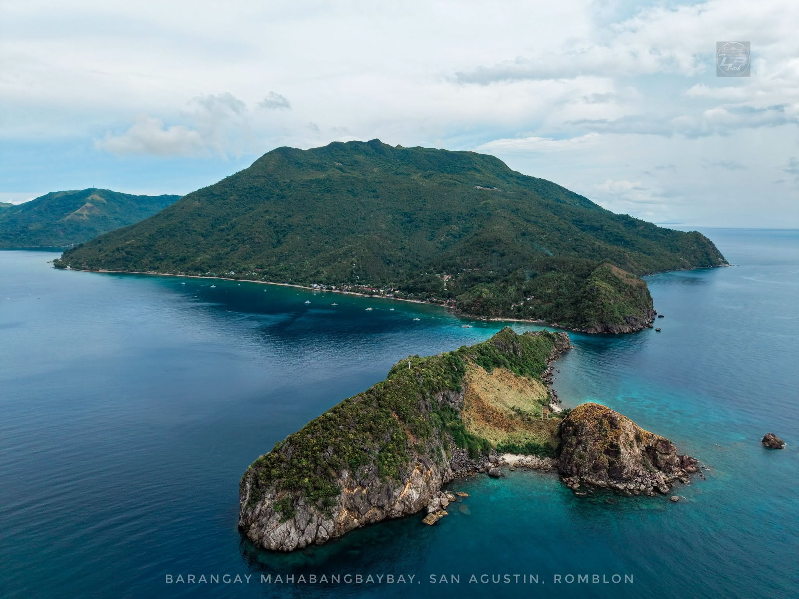
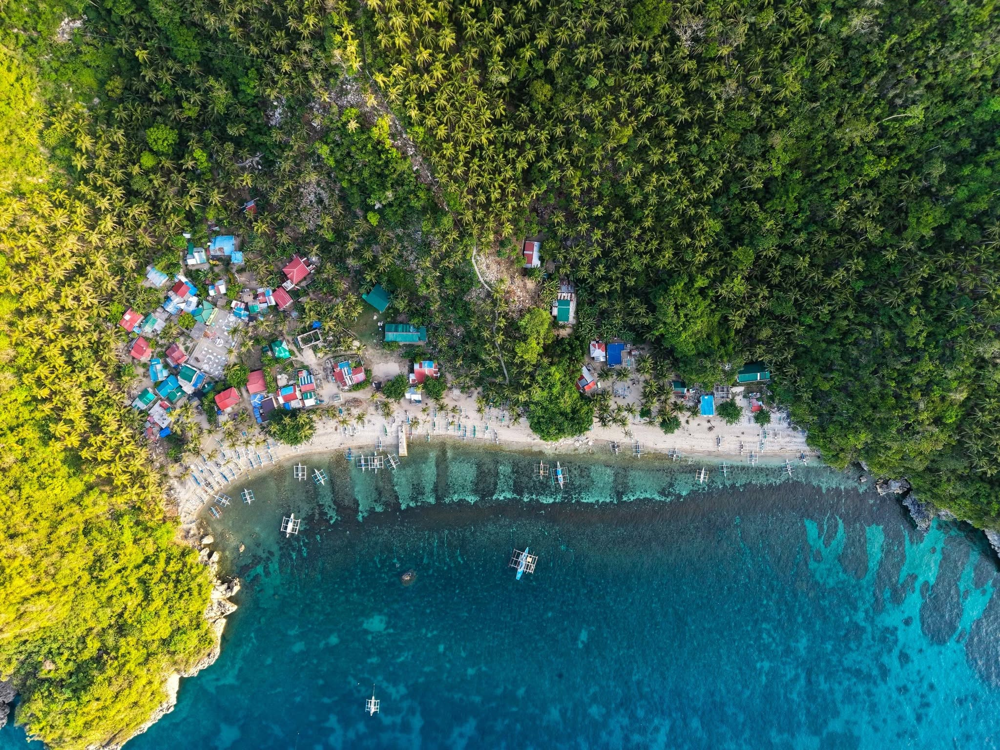
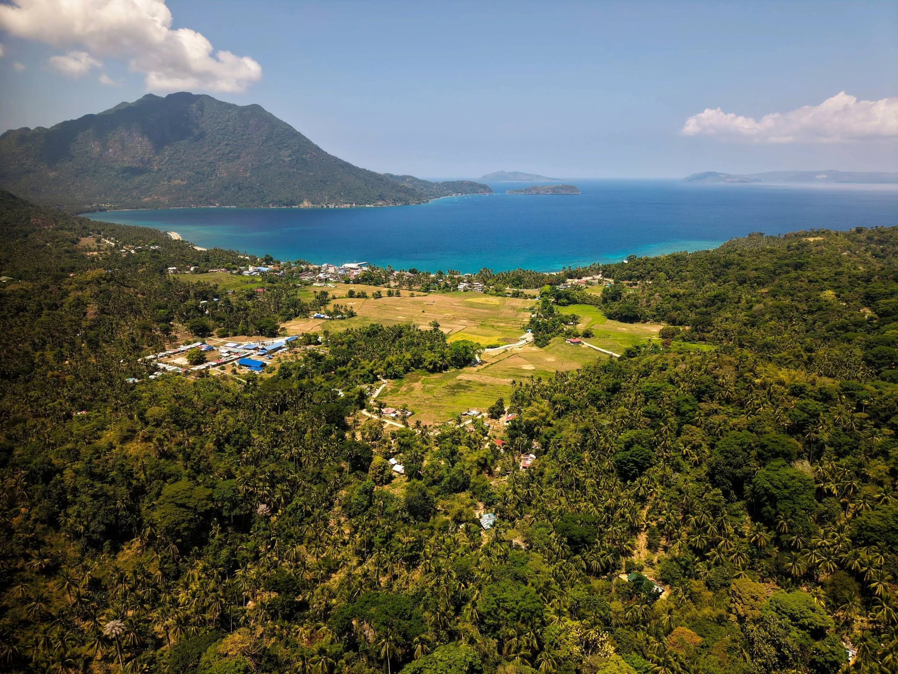

Explore the natural wonders that make San Agustin a top destination in Romblon. From deep sea mysteries to pristine islands, we have it all.

The Blue Hole in San Agustin is an underwater sinkhole that serves as a premier destination for scuba divers around the world. Known for its incredible depth and vibrant marine ecosystem, it offers a truly unique diving experience unlike any other in the region.
See Related Tours
Biaringan Island is your ultimate tropical escape. Featuring powdery white sand beaches and crystal-clear shallow waters, it is perfect for swimming, snorkeling, and sunbathing. The island's tranquil atmosphere guarantees a relaxing getaway from the city hustle.
See Related Tours
Experience the lush, vibrant coastal views of Cawayan. A perfect spot for scenic photography, tranquil walks, and experiencing the untouched beauty of San Agustin's coastline. The aerial views reveal the stunning contrast between the deep blue sea and the green landscapes.
See Related Tours
Payaopao offers an adventurous trek for nature lovers. With its rich biodiversity and breathtaking viewpoints, it's a must-visit for hikers and outdoor enthusiasts looking to connect with Romblon's natural heritage.
See Related Tours